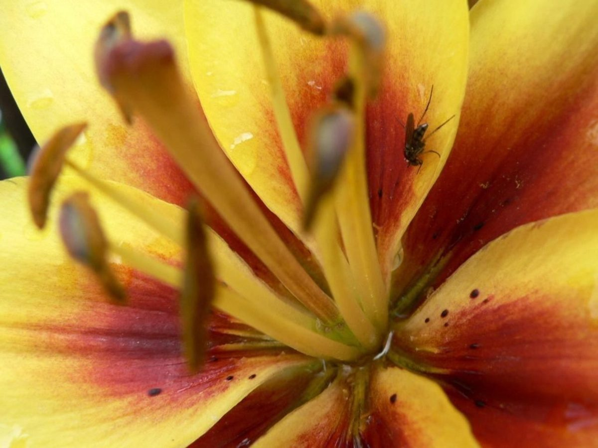
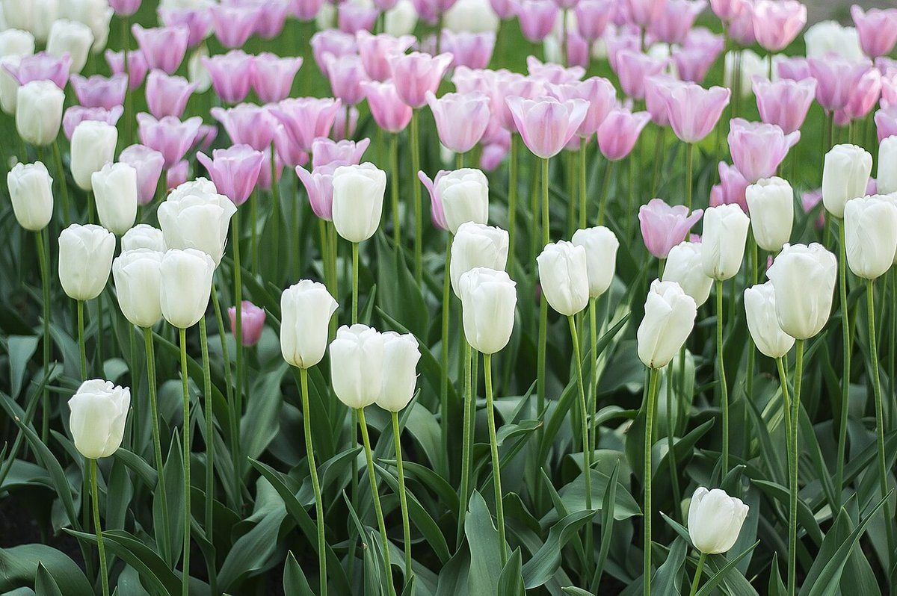
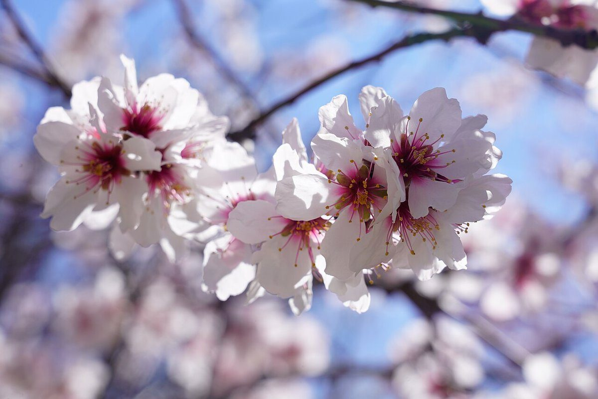
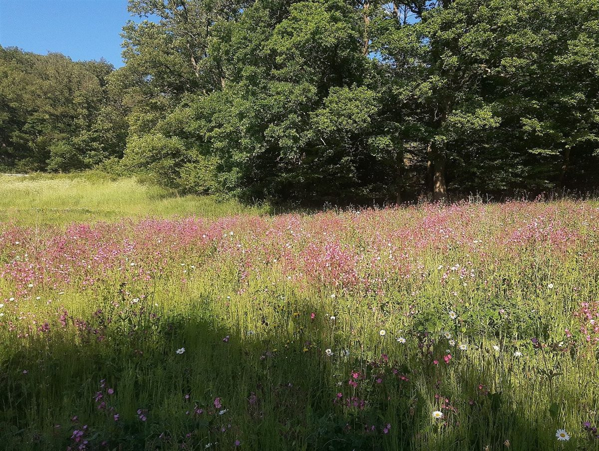

カフェ / 岩手県久慈市
Lily
岩手県久慈市のカフェ「Lily」のご案内ページです。営業時間やメニューなど詳しいことは準備中。まずはInstagramをのぞいてみてください。

制作側の連想
屋号「Lily」から、六枚の花びらを。
「Lily」は英語でユリの花のこと。店名の由来は分かりません。ユリの花は、花びら(花被片)が6枚、おしべが6本、めしべが1本という作りなので、制作側はそれをこのサイトの骨組みにしました。トップは「六弁」の写真、お店の情報は「めしべ1本とおしべ6本」の花式図です。お店の理念や由来とは無関係の、制作側の連想です。
六弁(イメージ写真)
ひらく、六枚。
写真は久慈市やお店のものではありません。花びらの数に合わせて選んだ、国外・撮影地不明のフリー素材です。
- 一弁

国外のイメージ(ポーランド) - 二弁

国外のイメージ(スペイン) - 三弁
国外のイメージ(イギリス) - 四弁

国外のイメージ(インド) - 五弁

国外のイメージ(オランダ) - 六弁

国外のイメージ(ドイツ)
花式図
確認できたことは、中心の1本だけ。
めしべ=確認できたこと(所在地とInstagram)。おしべ6本=まだ確認できていない項目で、すべて準備中です。
- 営業時間準備中
- 定休日準備中
- メニュー準備中
- 価格準備中
- ご予約準備中
- 駐車場準備中